AI and local Food team plans to produce following outputs at the end of this year’s project:
A comprehensive map to showcase the prices of eggs and bacon across various counties using the collected data. This map serves as a valuable tool for identifying trends and patterns in pricing, as well as understanding customer preferences towards specific brands. Additionally, the map aids in the selection of suitable selling locations by considering crucial factors such as brand reputation, pricing, and travel distance (cost).
Several web-scrapping spiders for selected websites to facilitate the creation of a comprehensive product database. These spiders will automate the process of data scraping, enabling repetitive and efficient collection of data.
Showcase the capability of the spiders with a specific crop example. The spiders will be utilized to extract data for one or more of the following six products: tomatoes (regardless of the type), carrots, green onions, potatoes, spinach, lettuce. This demonstration will effectively highlight the functionality and effectiveness of the spiders in retrieving the desired data.
Optimization of the crop flow, from the point of supply to the point of demand that maximizes overall profit. We will explore the factors and methodology to estimate the demand and supply.
This week’s tasks:
- Consolidated all scraped data from all different websites into one master file to be used for data analysis.
- Data Analysis:
- Imported necessary packages in Juypter Notebook for data analysis.
- Started cleaning the data: Missing values, fixing datatypes
- Started exploring the data using various visualizations.
Data Consolidation
Consolidated all collected data in three master lists of Eggs, Bacon and Heirloom tomato respectively. This would let work separately on each product’s data set and would give us more insights about the dataset.
Data Analysis
Started the data analysis by importing the necessary packages, we will keep adding more packages as we go along with analysis part.

Cleaning:
We found there were a lot of missing values in our data set for various columns

We dealt with missing values for filling NA like shown in the snapshot below:
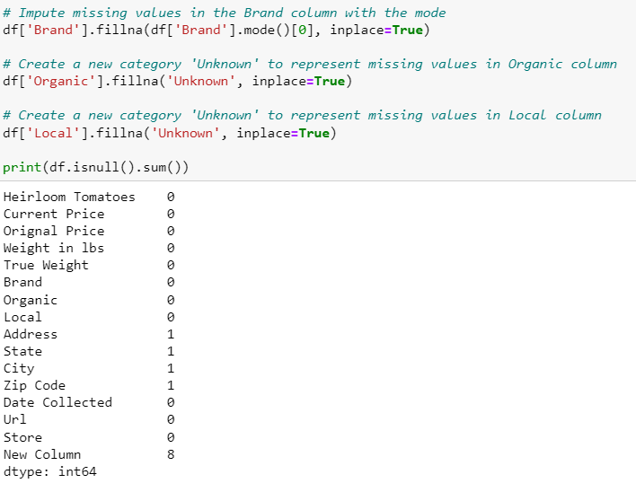
Price Analysis:
we can analyze the relationship between the current price and the original price of the heirloom tomatoes.
This analysis can help you understand the pricing trends and calculate potential discounts or price differences.
Visualize the distribution of current prices using histograms, box plots, or kernel density plots to gain insights into the pricing range and identify any outliers.
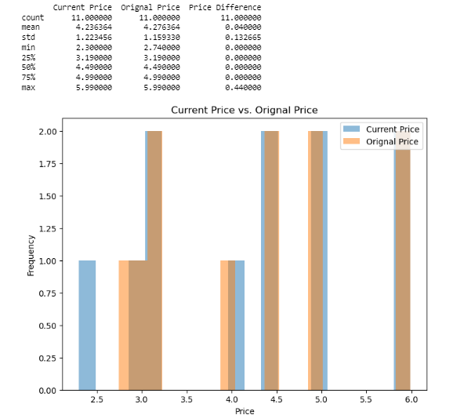
Weight Analysis:
Analyze the weight of the heirloom tomatoes by comparing the weight in pounds and the true weight.
This analysis can help you determine if there are any variations in weight and assess the accuracy of weight measurements.
Creating scatter plots or line plots to visualize the relationship between weight in pounds and true weight.
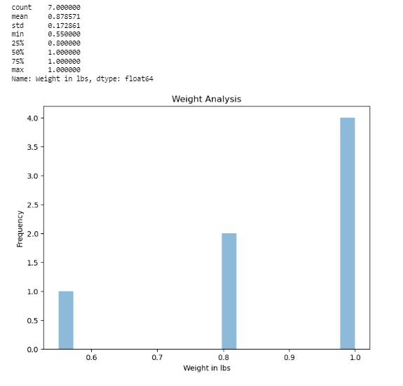
Brand Analysis:
Analyze the different brands of heirloom tomatoes available in the dataset. Calculate the frequency of each brand to determine the most popular ones.
Creating a bar chart and pie chart to visualize the distribution of brands and identify the market share of each brand.
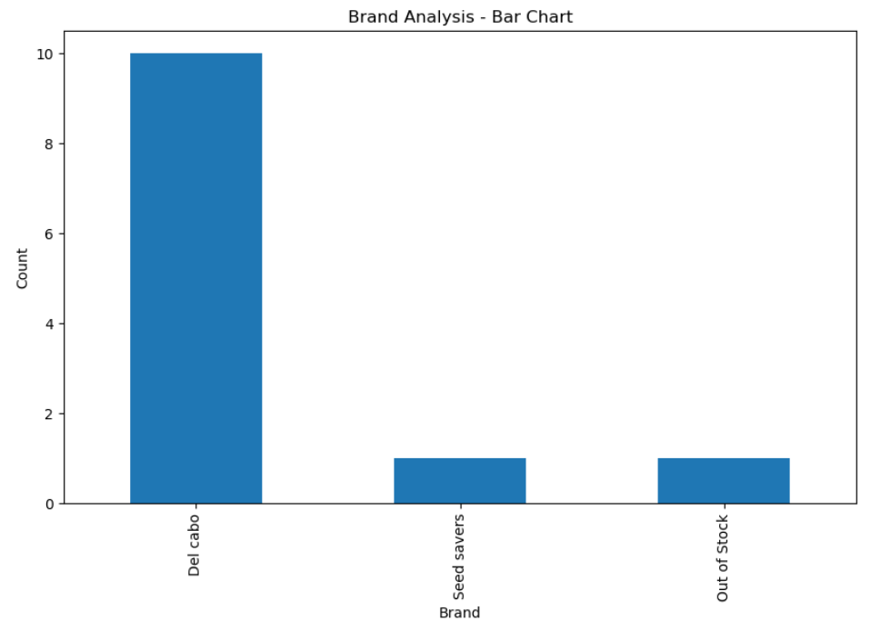
Organic and Local Analysis:
Analyze the presence of organic and locally sourced heirloom tomatoes. Calculate the percentage of organic and local products in the dataset. Creating a bar chart or pie chart to visualize the proportion of organic and local tomatoes.
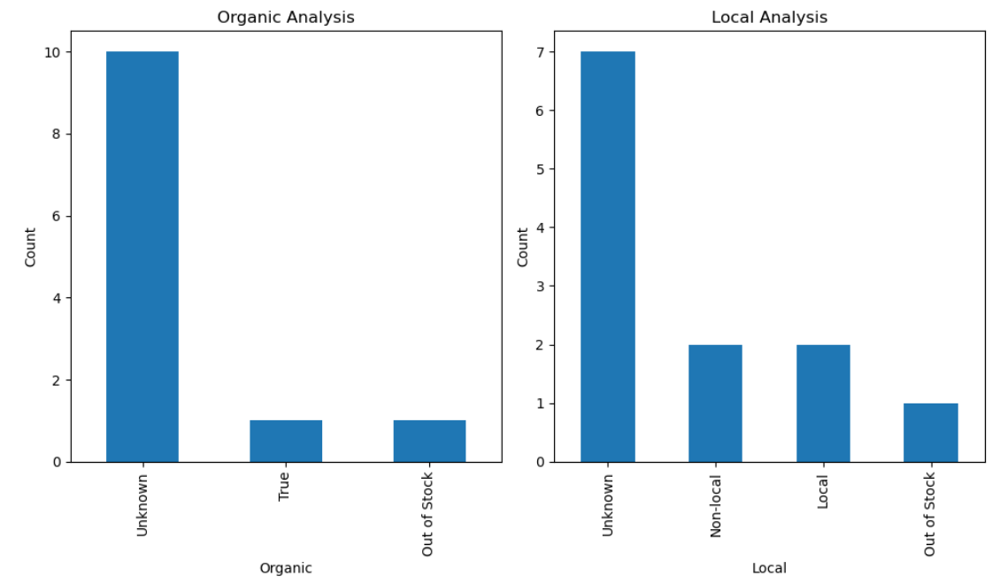
Several web-scrapping spiders for selected websites to facilitate the creation of a comprehensive product database.
To facilitate the creation of a comprehensive product database, we have developed several web-scraping spiders for websites such as
1. Fresh Thyme
2. Hy-Vee
3. Gateway Market
4. New Pioneer Co-op
5. Russ’s Market
6. Iowa Food Hub
7. Joia Food Farm
These spiders automate the data scraping process, eliminating the need for repetitive data collection and significantly increasing our efficiency. It’s important to note that this list is not exhaustive, as our web-scraping spiders can be expanded to include other websites beyond those listed here.
Showcase the capability of the spiders with a specific crop example.
It’s worth noting that the capability of these spiders is not limited to a specific product type; they can be utilized to extract data from a wide selection of products. As an example, we have successfully demonstrated their functionality and effectiveness in retrieving data for various products, including specific crops such as tomatoes, carrots, green onions, potatoes, spinach, lettuce, and many more.
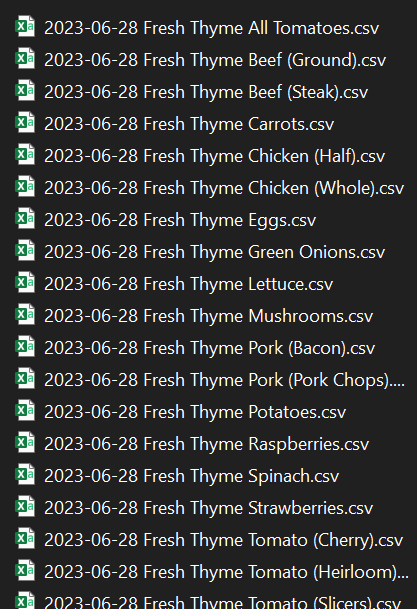
Moreover, these spiders can be further enhanced to automate the data cleaning processes which runs concurrently within the spider. This approach allows us to efficiently address data quality issues, ensuring that the collected data is reliable and ready for analysis. The main objective of this enhancement is to guarantee that the collected data is thoroughly cleaned before integrating it into a file format, providing a seamless transition for further analysis and utilization. This specific example Highlights Heirloom Tomatoes from the listed stores as mention above.
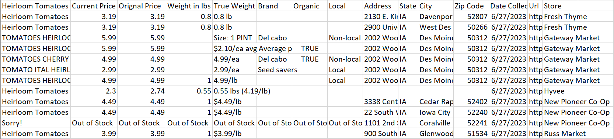
Optimization of the crop flow, from the point of supply to the point of demand that maximizes overall profit
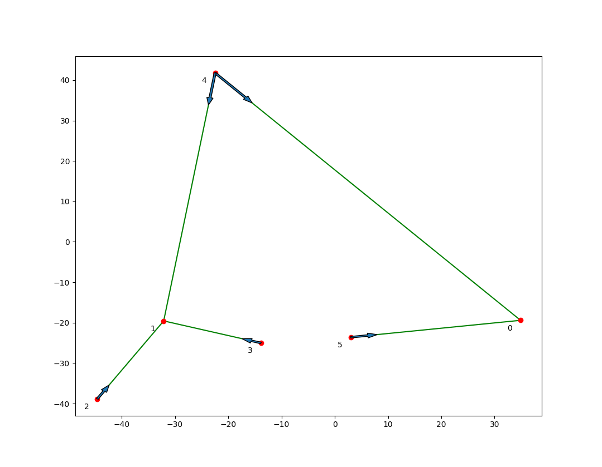
The red points represent the counties.
The green lines represent the flow of crops, and the blue arrow shows the direction of the flow.
Maximizes the revenue by selling the crops.
Minimizes the cost of distance traveled.
Relaxed previous assumption “Supply is greater than demand”
The following might be included in the project:
A separate account of fresh and not fresh products.
Consideration of each individual farmer’s profit.
Consideration of the flow of trucks rather than the flow of crops.
Demand and supply estimation
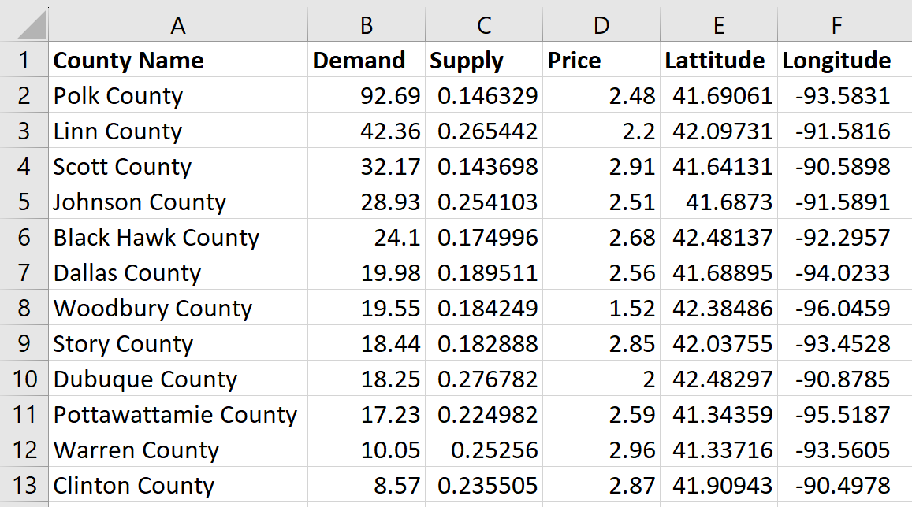
Disclaimer: Supply and demand estimation requires further correction, and the methodology needs improvements.
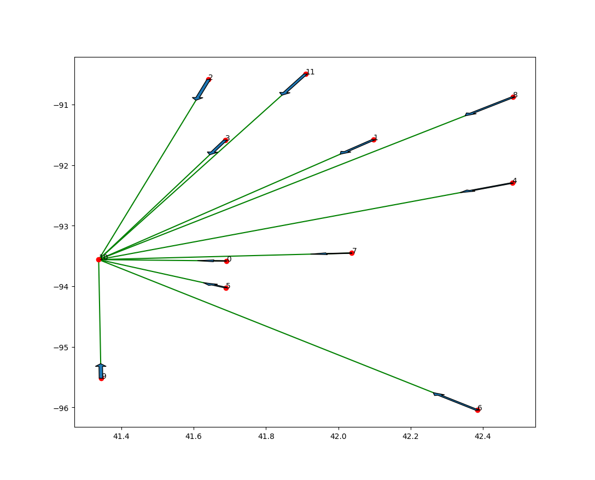
Demand Estimation:
The population of United States is 334.9 million as of June 26, 2023. (https://www.census.gov/popclock/)
In 2017, fresh market consumption was 20.3 pounds per capita. (https://www.agmrc.org/commodities-products/vegetables/tomatoes)
So, the demand for fresh tomatoes in the United States is (334.9 million x 20.3 pounds) or 3.08 Million Metric Tons.
There is around 1% of the US population lives in Iowa.
That translates to 30.8 thousand Metric Tons of tomatoes demand in Iowa.
Considering the demand for tomatoes stays the same for 52 weeks. The demand for tomatoes in Iowa per week is 592 Metric Tons.
We will allocate this demand to each county of Iowa by population.
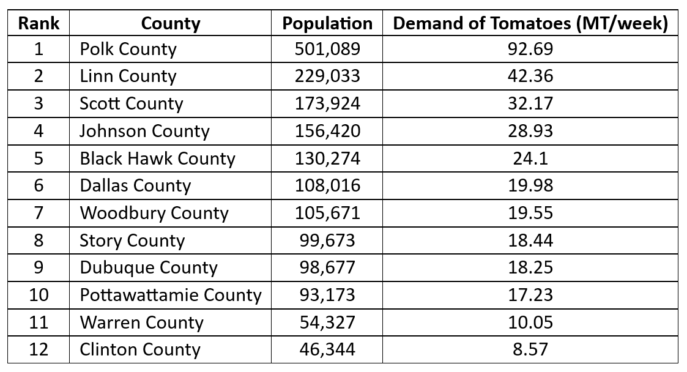
Supply Estimation:
The growing season of tomatoes is between May to Mid-September in Iowa. (https://www.tomatofest.com/Tomato_Growing_Zone_Maps_s/164.htm)
We have 135 days between planting and harvesting tomatoes.
Tomatoes require 100 days to fully mature. However, there are some special varieties of tomatoes that require 50-60 days to mature. (https://www.gardeningknowhow.com/edible/vegetables/tomato/planting-time-for-tomatoes.htm)
So, we are considering on average tomatoes take 80 days to be harvested.
In this context, we assumed that being mature represents the time between sowing seed and harvesting full-grown tomatoes.
We are only considering single cultivation of tomatoes during a year.
So, the tomatoes will be harvested during the timeline day 80-135 or, during late July to mid-September, that is 7.85 or 8 weeks.
In our calculations, we will estimate the weekly supply of tomatoes from late July to mid-September.
In 2020, approximately 12,619.2 tons of fresh market tomatoes were harvested from approximately 272,900 acres. (https://www.agmrc.org/commodities-products/vegetables/tomatoes)
Florida and California account for about two-thirds of the national fresh tomato production (Wu, F., Guan, Z., & Suh, D. H. (2017). The Effects of Tomato Suspension Agreements on Market Price Dynamics.; mentioned in https://edis.ifas.ufl.edu/publication/FE1027)
The remaining 48 states are responsible for one-third of the national fresh tomatoes. That is 4206.4 tons.
Total farming land in USA is 900.21 million acres as of 2022.
Total farm land in Florida is 9.73 million acres as of 2017.
Total farm land in California is 24.23 million acres as of 2017.
(https://www.nass.usda.gov/AgCensus)Remaining 48 states have a farm land of 866.25 million acres.
Total farmland in Iowa is 30.56 million acres. (https://www.nass.usda.gov/AgCensus)
Considering tomatoes are grown uniformly in these farmlands, the proportion of farmland Iowa has compared to all 48 states (without California, Florida) is 3.52%.
The production of tomatoes in Iowa is (3.52% x 4206.4 tons) or, 148 tons.
As the production of tomatoes is distributed over 8 weeks (as mentioned in no 8), the weekly supply quantity of tomatoes is (148/8) or 18.5 tons or 16.78 Metric Tons.
Considering the average farm size in each county of Iowa is the same. The supply of tomatoes can be obtained from the number of farms.
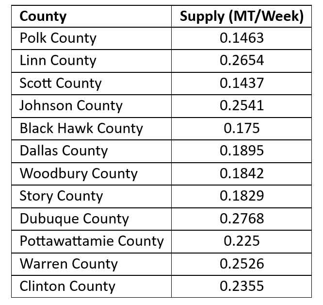
Teaser video: